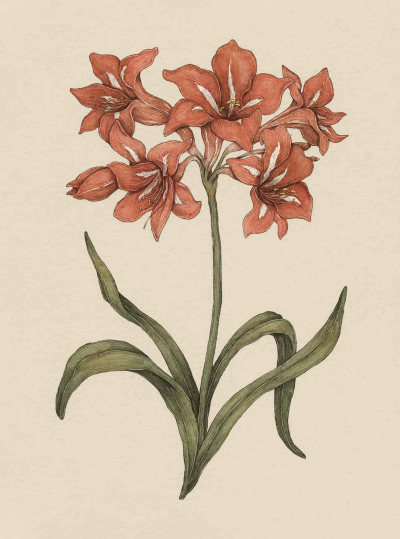
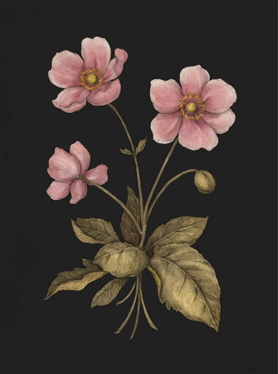
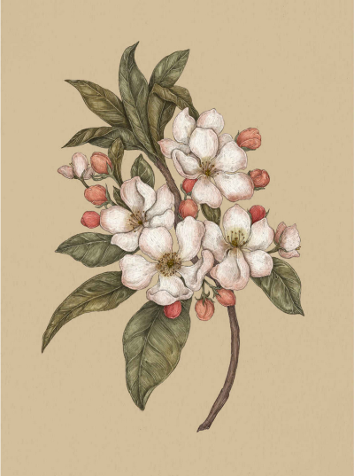
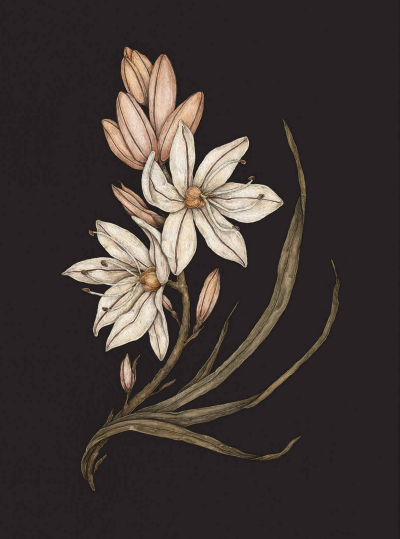
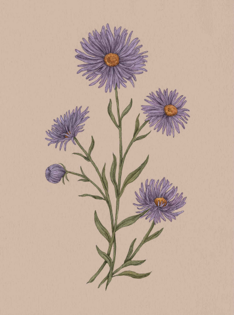
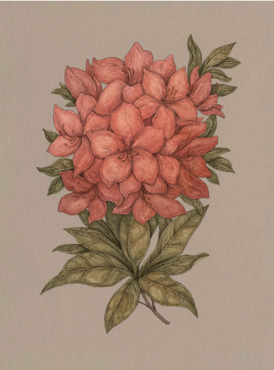
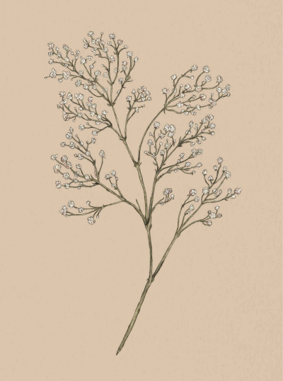
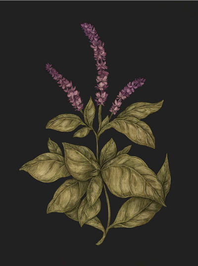
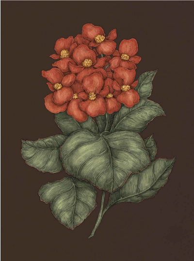

Learn About Floriography!
Why learn about Floriography?
The Victorian language of flowers—also called floriography—emerged as a clandestine method of communication at a time when proper etiquette discouraged open and flagrant displays of emotion. First emerging in 1819 with Charlotte de la Tour’s Le langage des fleurs, this coded “language” was used widely throughout the nineteenth century in both England and America and today is synonymous with Victorian tradition and culture. Flower meanings were taken from literature, mythology, religion, medieval legend, and even the shapes of the blooms themselves. Often, florists would invent symbolism to accompany new additions to their inventory, and occasionally, flowers had different meanings depending on the location and time. Young women of high society in this era embraced the practice, sending bouquets as tokens of love or warning, wearing flowers in their hair or tucked into their gowns, and celebrating all things floral. Many of them created small arrangements of flowers, called tussie-mussies or nosegays, by combining a few blooms in a small bouquet. Worn or carried as accessories, these coded messages of affection, desire, or sorrow allowed Victorians to show their true feelings in an enigmatic and alluring display.
As the era came to an end and the First World War began, the language of flowers faded in popularity. Traces of the tradition remain, however. We still use roses to convey love at weddings and on Valentine’s Day, lilies for peace, and mums for condolences. The elegance and beauty of flowers have not dwindled—only our knowledge of their coded meanings.
I hope this website, apart from offering a view into the history of floriography, will encourage readers to look at flowers and herbs in a new way, perhaps assigning their own meanings to the blooms that inspire them most.
Flowers
Amaryllis
Hippeastrum
Meaning: Pride
Origin: The Victorians associated amaryllis with pride by virtue of its grand, tall stalks topped with bright blooms that towered over other flowers. Amaryllis, with its often leafless stems, is also known for withstanding drought. It is a strong and hearty plant, too prideful to perish under harsh conditions.
Pair with... Hydrangea to indicate boastful pride Clematis to show the recipient should be proud of their cleverness.
Looks like...
Anemone
Anemone
Meaning: Forsaken love
Origin: The anemone’s association with forsaken love can be traced back to Greek mythology. The flower is said to have sprung from Aphrodite’s tears as she mourned the loss of her beloved Adonis. He was killed by the jealous gods over his relationship with the goddess of love.
Pair with... Camellia to show longing for what could have been; Yarrow to help heal a broken heart.
Looks like...
Apple Blossom
Malus
Meaning: Preference
Origin: The apple’s connection to preference comes from the fable of the Golden Apple of Discord. Eris, the goddess of discord, threw a golden apple into a wedding ceremony that she was not invited to attend. The apple was inscribed with “For the most beautiful,” and Hera, Athena, and Aphrodite all laid claim to it. Zeus tasked Paris of Troy with deciding between the three goddesses. He eventually chose Aphrodite after she promised him the love of the world’s most beautiful woman, Helen of Sparta. Because Helen was already married to King Menelaus, Paris’s preference ultimately caused the Trojan War.
Pair with... Pansy to show the recipient you’re thinking of them; Zinnia for a gift for a best friend.
Looks like...
Asphodel
Asphodelus
Meaning: My regrets follow you to the grave
Origin: In Greek mythology, asphodels grew in the underworld and were consumed by the dead. Homer’s Odyssey shaped the idea of asphodel as a flower of regret, referring to the Asphodel Meadows as a section of the underworld where neither good nor evil souls resided—a type of ghostly purgatory.
Pair with... Cypress or marigold to indicate mourning and despair; Rosemary to indicate eternal remembrance.
Looks like...
Aster
Symphyotrichum
Meaning: Daintiness
Origin: The aster’s association with daintiness most likely comes from its appearance. The many long and slender petals delicately surround a bright, yellow center: a tiny masterpiece in a field of blooms.
Pair with... Daisy for a gift for a young girl; Buttercup to compliment someone’s charming demeanor.
Looks like...
Azalea
Rhododendron
Meaning: Fragility; Temperance
Origin: The azalea is notoriously fragile and difficult to grow. The beautiful, tender blossoms only last for a short time before tumbling to the ground. Along with this, its shallow roots do not tolerate overwatering, hence its association with temperance.
Pair with... Mint or snowdrop to console a fragile state of mind; Heather to show the recipient will be taken care of in their time of need.
Looks like...
Baby's Breath
Gypsophila
Meaning: Purity; Innocence
Origin: In the late nineteenth century, the Gysophila plant was dubbed “baby’s breath,” due to its lovely scent and small, delicate blooms. Similar in appearance to the intricate lace of a bridal veil, this flower is frequently used in wedding bouquets as well as in arrangements for new mothers.
Pair with... Lily as a gift for new parents Queen Anne’s lace as a gift for a godparent, to thank them for protecting and caring for the child.
Looks like...
Basil
Ocimum
Meaning: Hate
Origin: Basil’s association with hate comes from the Greeks, who believed the plant’s unfolding leaves to resemble the basilisk’s opening jaws. The Greeks also associated hatred with the basilisk’s glare, because this legendary serpent could kill with just one glance.
Pair with... Lavender for betrayal; Oleander as a warning to someone you distrust
Looks like...
Begonia
Begonia
Meaning: To repay a favor; A warning
Origin: To repay a favor, Charles Plumier, a seventeenth-century French botanist, named the begonia flower after Michel Bégon, a French politician and plant collector. The flower’s name, which contains the phrase “be gone,” may explain its use as a symbol of warning.
Pair with... Sweet pea as a gift for the host of a party; Oleander to emphasize caution in a new prospect.
Looks like...
